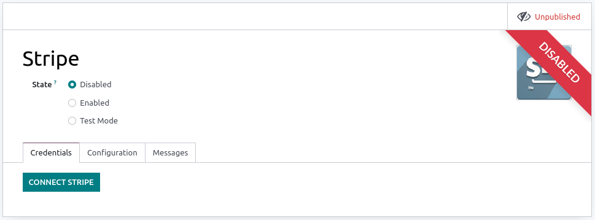

Stripe¶
Connecting a payment terminal allows you to offer a fluid payment flow to your customers and ease the work of your cashiers.
Important
Stripe payment terminals do not require an IoT Box
Stripe terminals can be used in many countries, but not worldwide. Check the global availability for Stripe Terminal.
Stripe’s integration works with Stripe Terminal smart readers
Configuration¶
Configure the payment method¶
Activate Stripe in the settings by going to and enabling Stripe.
Then, create the payment method:
Go to , click Create, and complete the Method field with your payment method’s name;
Set the Journal field as Bank and the Use a Payment Terminal field as Stripe;
Enter your payment terminal serial number in the Stripe Serial Number field;
Click Don’t forget to complete Stripe connect before using this payment method.

Note
Click Identify Customer to allow this payment method exclusively for identified customers. For any unidentified customers to be able to pay with Stripe, leave the Identify Customer field unchecked.
The Outstanding Account and the Intermediary Account can stay empty to use the default accounts.
Find your payment terminal serial number under the device or on Stripe’s dashboard.
Connect Stripe to Odoo¶
Click Connect Stripe. Doing so redirects you automatically to a configuration page. Fill in all the information to create your Stripe account and link it with Odoo. Once the forms are completed, the API keys (Publishable Key and Secret Key) can be retrieved on Stripe’s website. To do so, click Get your Secret and Publishable keys, click the keys to copy them, and paste them into the corresponding fields in Odoo. Your terminal is ready to be configured in a POS.
Note
When you use Stripe exclusively in Point of Sale, you only need the Secret Key to use your terminal.
When you use Stripe as payment provider, the State can stay set as Disabled.
For databases hosted On-Premise, the Connect Stripe button does not work. To retrieve the API keys manually, log in to your Stripe dashboard, type
APIin the search bar, and click Developers > API.
Configure the payment terminal¶
Swipe right on your payment terminal, click Settings, enter the admin PIN code, validate and select your network.
Note
The device must be connected to a secured WI-FI network.
Your Odoo database and payment terminal must share the same network.
You must enter the admin PIN code to access your payment terminal settings. By default, this code is
07139.
Link the payment method to a POS¶
To add a payment method to your point of sale, go to . Select the POS, scroll down to the Payments section, and add your payment method for Stripe in the Payment Methods field.
Pay with a payment terminal¶
When processing a payment, select Stripe as the payment method. Check the amount and click Send. Once the payment is successful, the status changes to Payment Successful. To cancel the payment request, click cancel.
Note
- In case of connection issues between Odoo and the payment terminal, force the payment by clicking on Force Done, which allows you to validate the order.This option is only available after receiving an error message informing you that the connection failed.
The terminal must have at least 10% battery level to use it.
The device does not work for payments under €0.50.